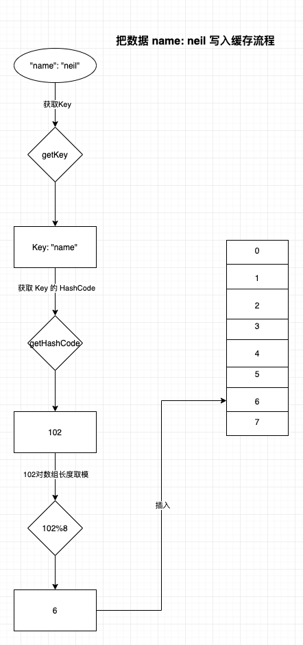

title: 架构 - 分布式缓存（一）
date: 2020-08-29 23:19:31
description: 缓存，是我们后端用到最多、最频繁、也是相对不那么陌生的一个组件了，在中台架构中缓存是充当什么角色呢？今天晚上整好梳理下。
keywords: 架构、缓存
tags:
缓存，相信每个做过后端的都应该很清楚，它有相对来说技术简单、对性能提升明显的特点广受后端研发和架构师的喜爱。
但是，不是所有的场景下都适合用缓存，所以，使用缓存的时候要注意以下几点：
从计算机、数据库到浏览器我们能看到很多缓存的身影。在外部系统中有：DNS 缓存、浏览器缓存、Http 代理和反向代理、CDN 缓存以及各种对象缓存。所以，本章我们重点要学习的就是对象缓存，常见的有：Redis，Memcached 等。
缓存的数据结构主要是 Hash 表，这个和 HashMap 和 HashTable 一样，都是基于 Hash 表实现的。
什么是 Hash 表？
它其实是一个数组结构，也就说它需要的存储空间是必须连续的。这样就会有个风险，如果你的连续内存不够多，而你存储一个比较大的数据，此时可能会内存溢出。比如：即使你的内存还剩下 512M ，你存储 1 个 400M 的数据，你认为够了，但还是报 OOM 了，原因就在于此。
比如，需要加一个 ”name”: “neil” 的数据，具体流程如下：

如果要从缓存中获取数据，比如 cache.getValue(‘name’)，其流程和上面类型。
刚刚我们用具体例子熟悉了写入缓存和获取缓存的流程和机制。我们知道，缓存是通过键来精准匹配数据的。
再比如，如果我们要缓存整个会员(用户)的数据，那我们的键就是 UserID ,那键集合空间就是我们这个系统所有的会员的全体 ID ，比如我们有 1000w 个会员，那我们就会有 1000w 个键存在缓存键集合中。
在设计缓存中有个必须注意的点：键越少越好。重点体现在它性能方面。
缓存的数据是存储在内存中，内存空间越大，其缓存对象就会越多。一般我们缓存的大小都不会像硬盘一样搞个几百 G，或几个 T，所以，缓存的使用要有规范，不能什么数据都塞进来。在特定大小的缓存里，如果要缓存新对象，肯定要删除一些老的对象，删除老的对象肯定会影响缓存命中。
物理缓存空间越大，缓存对象越多，缓存命中越高。
缓存命中率也是经常面试中经常被问到的。我们知道我们使用缓存的场景是读多写少，我们希望通过缓存来实现一次数据库查询写入缓存之后，满足后面多次查询的请求，减少数据库压力，直接从缓存获取数据，提高性能。所以，希望缓存命中率越高越好。
计算公式：正确缓存查询得到数据次数 / 查询总次数。
当然，缓存生产时间、上面的说的键集合大小、内存空间都是影响命中率的因素。
缓存的对象的生存时间称为 TTL。刚刚说了缓存的时间、缓存空间越大缓存命中就会越高，但是内存不是足够大，总要有所取舍。
缓存失效的方式有：实时失效、过期失效、LRU失效。
当我们缓存了某个数据，比如某个商品信息，此时我们更像商品的价格，此时需要直接删除缓存的数据。当获取这个商品的时候先从缓存获取，返回为空，然后此时从数据库查询获取最新数据，再更新缓存。
注意，更新数据，直接删除缓存，不可直接更新缓存。
我们存储数据的时候会设置对象的过期时间，如果到时间之后，对象会自动被删除（其实是缓存有算法轮询删除）。
注意，此时注意那些过期时间为 -1 的对象。
LRU 是最近最久未使用算法。当缓存空间不够，如果要存入新的对象，是需要删除一些对象才可以存储进来新的。此时可以使用 LRU 算法。这个算法，也经常会被面试问到。
大致实现：一个链表来实现，当访问了某个对象，把对象移到队头。所以，越往队尾就代表越少被访问，删除是则从队尾开始删除。
今天先从基本概念了解下缓存。下节我们复习下外部系统的缓存，如反向代理之类的。